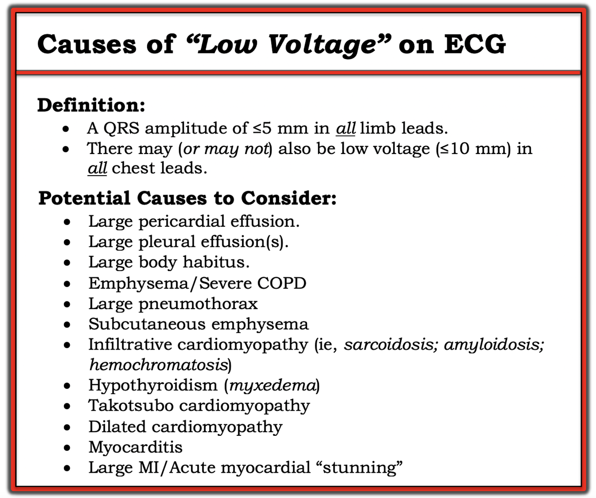
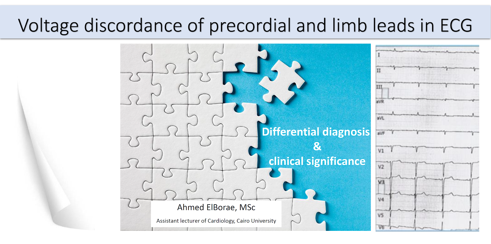
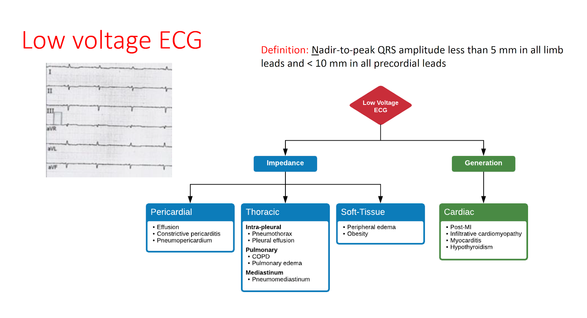
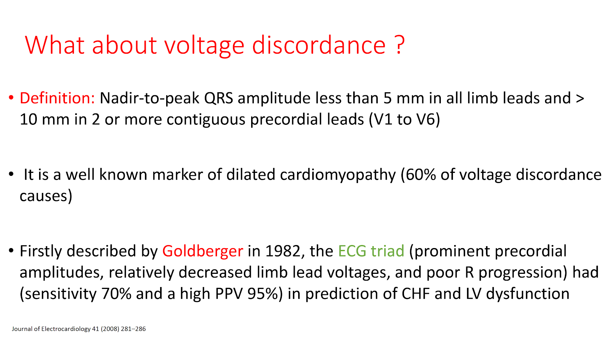
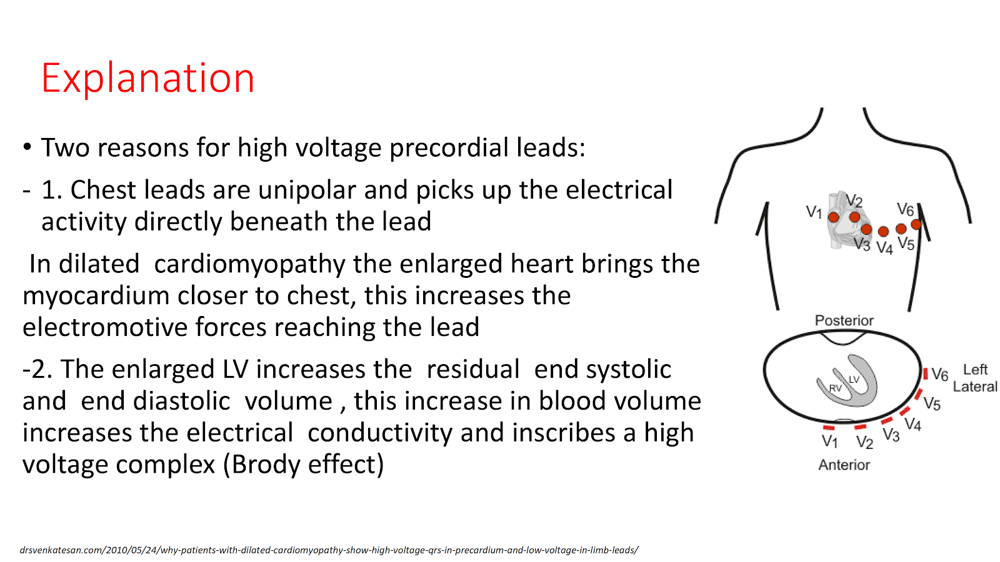
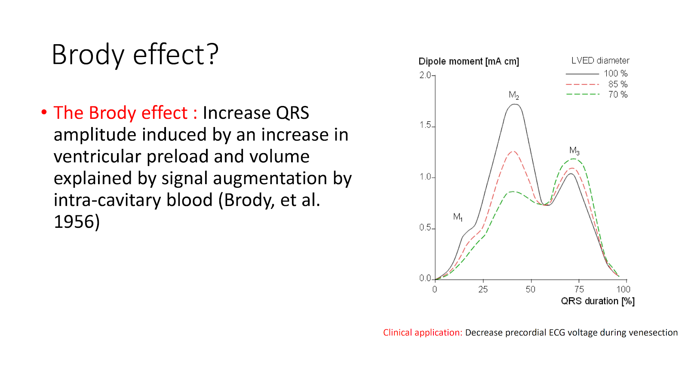
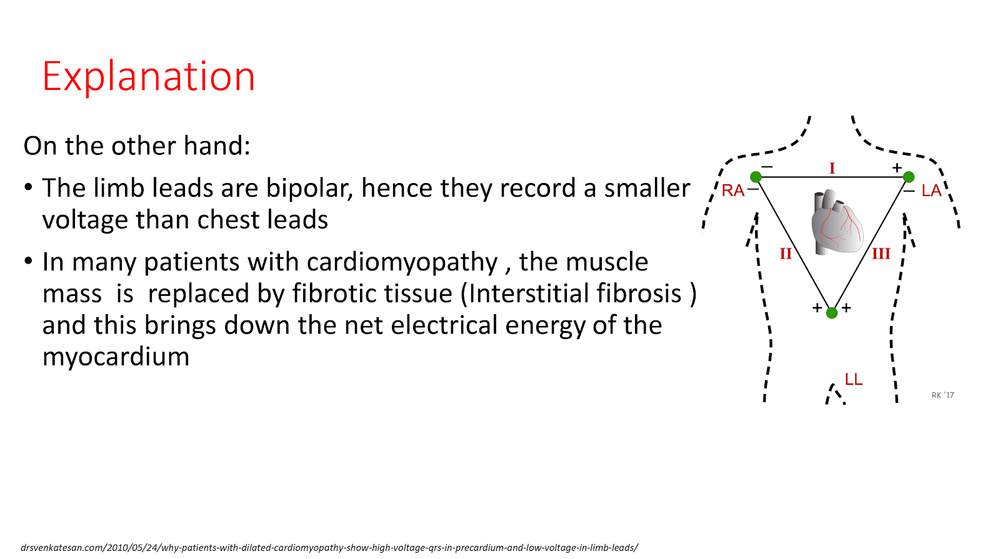
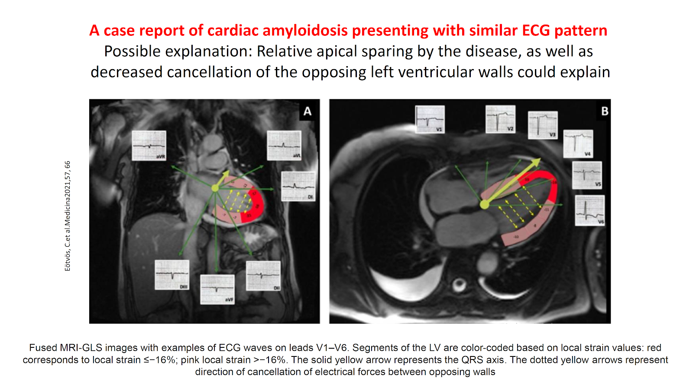

ECG Blog #272 — Đau ngực 3 ngày ...
Bệnh nhân là một người đàn ông ngoài 70 tuổi — có triệu chứng trong 3 ngày qua. Ông đến khoa cấp cứu (ED) vì đau ngực ngày càng tăng. Điện tâm đồ ban đầu của ông được trình bày ở Hình-1.
CÂU HỎI:
- Có nên kích hoạt phòng thông tim (cath lab) không?
- Bao nhiêu trong 12 chuyển đạo biểu hiện thay đổi ST-T bất thường?
- Điện thế thấp có phải là một dấu hiệu có ý nghĩa không?
=======================================
LƯU Ý: Đến đây, một số bạn đọc có thể muốn nghe ECG Audio PEARL dài 4:00 phút trước khi đọc Suy nghĩ của tôi về điện tâm đồ ở Hình-1. Bạn có thể tham khảo Suy nghĩ của tôi về các bản ghi này bất cứ lúc nào (nằm ở bên dưới ECG MP-80).
=======================================
ECG Media PEARL #80 (4:00 phút Audio) hôm nay — Ôn lại dấu hiệu Điện thế Thấp (và các hệ quả lâm sàng tiềm tàng của điện thế thấp trong bối cảnh nhồi máu cơ tim cấp) trên điện tâm đồ.


=============================
Cách tiếp cận CỦA TÔI với điện tâm đồ ở Hình-1:
Như thường lệ — tôi ưu tiên một Cách tiếp cận hệ thống khi đọc mọi điện tâm đồ tôi gặp (Cách tiếp cận hệ thống này được ôn lại trong ECG Blog 205).
- Tần số & Nhịp: Nhịp xoang, tần số ~70/phút.
- Các khoảng: Các khoảng PR, QRS và QTc đều có vẻ bình thường.
- Trục: Trục QRS trên mặt phẳng trán bình thường (gần 0 độ — vì phức bộ QRS ở chuyển đạo aVF gần như đẳng điện).
- Lớn các buồng tim: Không có
ĐIỂM THEN CHỐT (PEARL) #1: BẠN có nhận thấy Điện thế Thấp tương đối trên toàn bộ bản ghi này không? Mặc dù bản ghi này chưa hoàn toàn đạt tiêu chuẩn chặt chẽ của điện thế thấp (low voltage) (tức là phức bộ QRS ở cả 6 chuyển đạo chi không đều ≤5 mm — vì sóng R ở chuyển đạo I cao hơn mức này). Dù vậy — 5 trong 6 chuyển đạo chi thỏa tiêu chuẩn điện thế thấp này — và cả 6 chuyển đạo trước ngực đều có biên độ nhỏ!
- Khi chúng ta sắp cân nhắc khả năng nhồi máu cấp hoặc mới xảy ra — sẽ hữu ích nếu nắm được các nguyên nhân tiềm tàng liên quan đến điện thế thấp.
- Các nguyên nhân tiềm tàng có liên quan gây Điện thế Thấp cần cân nhắc trong ca hôm nay gồm: i) Tràn dịch màng ngoài tim; ii) Bệnh cơ tim Takotsubo; và, iii) Một nhồi máu cấp (hoặc mới xảy ra) diện rộng, có thể gây "choáng váng" cơ tim (myocardial stunning) (Xem Audio Pearl ở trên và/hoặc ECG Blog #262 để biết thêm về chủ đề này).
Tiếp tục với Hệ thống của tôi — Về Thay đổi Q-R-S-T:
- Sóng Q — Việc đánh giá khó khăn vì biên độ các nhát bóp nhỏ ở chuyển đạo III, và nhất là ở chuyển đạo aVF. Dù vậy — có sóng QS ở ít nhất 2 trong 3 nhát ở chuyển đạo III. Có vẻ như có một sóng dương đầu tiên cực kỳ nhỏ (sóng r) ở nhát giữa của chuyển đạo này.
- Tôi thấy việc đánh giá sóng Q ở chuyển đạo aVF còn khó hơn — vì biên độ QRS ở chuyển đạo này rất nhỏ (không quá 2 mm). Điều có thể nói về chuyển đạo aVF — là cả 3 nhát ta thấy ở chuyển đạo này đều có khía (tức là phân mảnh).
ĐIỂM THEN CHỐT #2: Dấu hiệu phức bộ QS đơn độc ở chuyển đạo III và/hoặc chuyển đạo aVF không đủ để chẩn đoán nhồi máu thành dưới cũ.
- Độ đặc hiệu cao hơn cho việc đã từng có nhồi máu thành dưới vào một thời điểm nào đó chỉ đạt được khi thấy sóng Q có "kích thước nhất định" (tức là lớn hơn và/hoặc rộng hơn sóng q vách bình thường) ở cả 3 chuyển đạo thành dưới (tức là các chuyển đạo III, aVF và cả chuyển đạo II).
- Dù vậy, theo kinh nghiệm của tôi — dấu hiệu phức bộ QRS đẳng điện hoặc âm ưu thế và phân mảnh ở một hay nhiều chuyển đạo thành dưới (như thấy ở chuyển đạo aVF trong Hình-1) — làm tăng đáng kể khả năng đã từng có nhồi máu thành dưới vào một thời điểm nào đó.
- Ở Hình-1 — không có sóng Q ở chuyển đạo II. Vì vậy — riêng vấn đề phức bộ QS ở chuyển đạo III tự nó không dự báo đáng tin cậy việc đã từng có nhồi máu thành dưới. Tuy nhiên, khi đi kèm phức bộ nhỏ, có khía (phân mảnh) ở chuyển đạo aVF — tôi nghi ngờ đã từng có nhồi máu thành dưới vào một thời điểm nào đó. Biến cố này bắt đầu từ 3 ngày trước (lúc khởi phát triệu chứng ở bệnh nhân hôm nay) — hay nhồi máu thành dưới là cũ và không liên quan đến các thay đổi ST-T mà chúng ta sắp đánh giá ở các chuyển đạo trước ngực — thì không thể xác định được từ một điện tâm đồ duy nhất này.
Tiếp tục với Hệ thống của tôi — Về Tăng tiến sóng R (R wave progression):
"Vùng chuyển tiếp" (transition) — được cho là nằm ở nơi chiều cao sóng R trở nên lớn hơn độ sâu sóng S ở các chuyển đạo trước ngực. Vùng chuyển tiếp bình thường nằm giữa chuyển đạo V2 đến V4. Vì cách dùng phổ biến — tôi vẫn giữ thuật ngữ "tăng tiến sóng R" như một phần trong Cách tiếp cận hệ thống của tôi khi đọc điện tâm đồ 12 chuyển đạo — dù việc xác định "vùng chuyển tiếp" cho chúng ta thông tin hữu ích hơn (Xem ECG Blog #269 — để ôn lại đầy đủ về Tăng tiến sóng R).
- Tăng tiến sóng R: Ở Hình-1 — tăng tiến sóng R "kém", vì vùng chuyển tiếp bị lùi đến giữa chuyển đạo V4 và V5.
- Ngoài phức bộ QS ở chuyển đạo V1 — không thấy sóng Q và/hoặc phức bộ QS ở các chuyển đạo trước ngực khác. Dù vậy — vùng chuyển tiếp bị lùi có ý nghĩa trong ca hôm nay! Đó là vì biên độ sóng r giảm ở các chuyển đạo thành trước, và sóng R nhỏ ở các chuyển đạo V5 và V6 — có thể phản ánh sự mất các lực khử cực thành trước do nhồi máu mới xảy ra.
Cuối cùng — Về Thay đổi ST-T:
Các bất thường ST-T (có cái kín đáo — có cái không hề kín đáo) được thấy ở ít nhất 9 trong 12 chuyển đạo trên bản ghi hôm nay. Cho rõ ràng — tôi đã đánh dấu một số dấu hiệu này ở Hình-2:
- Các dấu hiệu ST-T bất thường nổi bật nhất — là sóng T tối cấp (hyperacute T waves) ở các chuyển đạo từ V2 đến V6. Thật khó để định nghĩa thuật ngữ "tối cấp" khi nói về hình dạng sóng T. Định nghĩa của tôi là trong bối cảnh lâm sàng "phù hợp" (tức là ở một bệnh nhân có đau ngực nghe giống nguồn gốc tim) — 1 hay nhiều sóng T mang dáng vẻ "quá đầy đặn" (hypervoluminous) — tức là chúng trông cao hơn mong đợi so với biên độ QRS ở chuyển đạo đang xét — đồng thời "béo hơn" ở đỉnh và rộng hơn ở chân so với bình thường (Xem ECG Blog #218, cũng như Audio Pearl trong bài đó để biết thêm về cách định nghĩa sóng T tối cấp).
- 3 chuyển đạo ở Hình-2 trong đó sóng T rõ ràng nhất là "tối cấp" — là các chuyển đạo V3, V4 và V5. Ở mỗi chuyển đạo này — sóng T vươn cao vượt hẳn các sóng R biên độ nhỏ. Không chỉ các sóng T này cao hơn nhiều so với sóng R — mà chúng còn rõ ràng "béo hơn" ở đỉnh và rộng hơn ở chân so với mong đợi, xét theo kích thước sóng R (và phức bộ QRS) ở từng chuyển đạo tương ứng.
ĐIỂM THEN CHỐT #3: Theo khái niệm "hình thái của các chuyển đạo lân cận" — Vì ST-T ở các chuyển đạo V3, V4 và V5 bất thường rõ ràng như vậy — các thay đổi ST-T kém rõ hơn phần nào ở các chuyển đạo lân cận V2 và V6 nhiều khả năng cũng bất thường.
- Ở chuyển đạo V6 — mặc dù sóng T không cao hơn sóng R — sóng T này ở chuyển đạo V6 vẫn cao hơn nhiều so với mong đợi khi xét đến kích thước nhỏ của sóng R ở chuyển đạo này.
- Chiều cao sóng T ở chuyển đạo V2 không nổi bật bằng biên độ sóng T ở chuyển đạo V3. Tuy nhiên, "điểm cất cánh" (takeoff) của đoạn ST thẳng một cách bất thường (tức là song song với đường chéo MÀU ĐỎ ở chuyển đạo V2 trong Hình-2). Ngoài ra, xét đến sóng r ở chuyển đạo V2 nhỏ như thế nào (tức là 2 mm) — sóng T ở chuyển đạo này một lần nữa lại "quá đầy đặn" (tức là rõ ràng có chân rộng hơn nhiều so với mức lẽ ra phải có). Vì vậy, tôi cũng diễn giải các chuyển đạo V2 và V6 là "tối cấp".
- Thay đổi ST-T ở chuyển đạo V1 kín đáo — nhưng dù sao vẫn là "thật". Bình thường ở chuyển đạo này — ST chênh lên không quá mức tối thiểu. Mặc dù sóng T ở chuyển đạo V1 bình thường có thể đảo ngược (mũi tên MÀU TÍM ở Hình-2) — hình dạng của đoạn ST ở chuyển đạo này (tức là dạng vòm (coved) hay dạng "mặt mếu", như được minh họa bằng cung cong MÀU ĐỎ) — đi kèm với ST chênh lên nhìn thấy (so với đường chấm MÀU ĐỎ ở chuyển đạo V1 — biểu thị đường nền đoạn PR) là không bình thường (nhất là khi có bất thường ST-T rõ ràng ở 5 chuyển đạo trước ngực còn lại)!
Về Thay đổi ST-T ở các Chuyển đạo Chi:
- ST-T ở các chuyển đạo II, III và aVF đều bất thường rõ ràng. Đoạn ST ở mỗi chuyển đạo thành dưới này đều "lõm như muỗng" (scooped), gợi ý ST chênh xuống nhẹ. Dù vậy — dấu hiệu nổi bật nhất là phần cuối sóng T dương (terminal T wave positivity) ở mỗi chuyển đạo trong 3 chuyển đạo thành dưới này (các mũi tên MÀU XANH chỉ lên ở Hình-2 — sóng T có phần cuối dương nổi bật nhất thấy ở chuyển đạo II).
- Tùy theo tình huống lâm sàng (và giai đoạn tiến triển trong một biến cố tim cấp) — dấu hiệu dương ở phần cuối sóng T này đi kèm ST dẹt hoặc chênh xuống là bất thường rõ ràng, và có thể biểu thị những thay đổi tái tưới máu (reperfusion) ban đầu (tức là hình ảnh soi gương của sóng T đang đảo ngược ở các chuyển đạo từng có ST chênh lên).
- Không có điện tâm đồ trước đó (điện tâm đồ nền) để so sánh — tôi không chắc ST-T ở các chuyển đạo I và aVL có bất thường hay không. Tôi nghĩ hình dạng phức bộ QRST ở chuyển đạo aVR không có gì đặc biệt.
ĐIỂM THEN CHỐT #4: Khi đánh giá một điện tâm đồ về khả năng bệnh tim thiếu máu cục bộ cấp — càng nhiều chuyển đạo bất thường, khả năng các bất thường bạn phát hiện là thật càng cao! Tôi thấy hữu ích khi bắt đầu từ vài chuyển đạo rõ ràng có dấu hiệu ST-T bất thường cấp — rồi áp dụng khái niệm "hình thái của các chuyển đạo lân cận" khi quan sát kỹ để phát hiện những dấu hiệu kín đáo hơn ở các chuyển đạo còn lại.
- Như đã mô tả ở trên trong Hình-2 — Chúng ta đã xác định được bất thường ST-T chắc chắn ở không dưới 9/12 chuyển đạo. Điều này ủng hộ mạnh mẽ một biến cố tim mới xảy ra (hoặc vẫn đang tiếp diễn).
Tổng Hợp Lại Toàn bộ:
Điện tâm đồ ở Hình-2 cho thấy nhịp xoang — điện thế thấp — nghi vấn sóng QS ở chuyển đạo III (kèm phức bộ nhỏ, phân mảnh ở chuyển đạo aVF) — tăng tiến sóng R kém (với sóng R biên độ thấp cho đến các chuyển đạo V5, V6) — sóng T tối cấp đáng lo ngại ở các chuyển đạo từ V2 đến V6 — kèm thay đổi ST-T soi gương (reciprocal) rõ ở các chuyển đạo thành dưới (bao gồm phần cuối sóng T dương, nhiều khả năng biểu thị sóng T tái tưới máu dương).
- Với bệnh sử 3 ngày có triệu chứng ở người đàn ông lớn tuổi này, người cuối cùng đã đến khoa cấp cứu vì đau ngực ngày càng tăng — tôi diễn giải bản ghi này là gợi ý nhồi máu thành trước diện rộng cấp và/hoặc đang tiếp diễn. Mặc dù không chuyển đạo trước ngực nào biểu hiện điểm J chênh xuống — các sóng T lớn không tương xứng ở chuyển đạo trước ngực phù hợp với hình ảnh sóng T kiểu de Winter (deWinter-like) (Xem ECG Blog #183 để biết "Quan điểm của tôi" về khái niệm này). Dù vậy — tôi không chắc nhồi máu cấp đã xảy ra VÀO LÚC NÀO trong 3 ngày có triệu chứng của bệnh nhân — hay có lẽ đã có một diễn tiến "ngắt quãng" (stuttering) kéo dài với tắc và thông tự phát.
- Diễn tiến của nhồi máu cấp không phải lúc nào cũng là "tất cả hoặc không có gì". Ý tôi là — "động mạch thủ phạm" (nhiều khả năng nhất là đoạn gần hoặc đoạn giữa LAD trong ca hôm nay) — có thể tắc cấp — rồi thông lại tự phát — sau đó tự thông lại và tắc lại nhiều lần cho đến khi động mạch "thủ phạm" đạt trạng thái cuối cùng.
- Bất kể tắc mạch vành cấp xảy ra lần đầu vào lúc nào trong 3 ngày có triệu chứng của bệnh nhân — việc không có sóng Q ở thành trước, cùng với thay đổi sóng T tối cấp rõ rệt ở bệnh nhân này, người đến khoa cấp cứu vì triệu chứng tăng lên — gợi ý mạnh rằng vẫn còn một vùng cơ tim đang bị đe dọa rộng lớn có thể hưởng lợi từ tái tưới máu kịp thời. Thông tim rõ ràng là có chỉ định để xác định giải phẫu và định hướng quyết định lâm sàng.
KẾT LUẬN của ca bệnh:
Bệnh nhân trong ca hôm nay đã được thông tim. Không có gì bất ngờ, kết quả cho thấy tắc hoàn toàn đoạn giữa động mạch vành LAD (động mạch liên thất trước — Left Anterior Descending). Có các tổn thương nhẹ ở LCx (động mạch mũ trái — Left Circumflex) và RCA (động mạch vành phải — Right Coronary Artery).
- Sau đó bệnh nhân này xuất hiện rối loạn nhịp — mà tôi sẽ bàn khi ca bệnh này được tiếp tục trong bài kế tiếp ECG Blog #273.
==================================
Lời cảm ơn: Xin cảm ơn 유영준 (từ Seoul, Hàn Quốc) đã cho tôi biết về ca này và cho phép tôi sử dụng bản ghi này.
==================================
=============================================
PHẦN BỔ SUNG (1/25/2025):
Bất tương hợp điện thế (Voltage Discordance) là gì?
- Đôi khi có thể có điện thế thấp ở các chuyển đạo chi (tức là mọi điện thế QRS ở các chuyển đạo chi đều ≤5 mm) — nhưng điện thế QRS bình thường ở các chuyển đạo trước ngực. Hiện tượng này được gọi là "Bất tương hợp điện thế" (Voltage Discordance) (Chinitz và cs. — J Electrocardiol 41(4):281-286, 2008).
- Điện thế thấp chỉ khu trú ở các chuyển đạo chi sẽ liên quan đến cùng danh sách các nguyên nhân tiềm tàng như tôi đã nêu ở trên trong Audio Pearl hôm nay — chỉ ở khoảng 50% trường hợp.
- Trong các trường hợp "Bất tương hợp điện thế" còn lại — bệnh nhân sẽ có bệnh cơ tim giãn. Giải thích sinh lý vì sao thấy hiện tượng điện tâm đồ này được trình bày trong tệp PDF bên dưới (tệp PDF này được phỏng theo bài trình bày của Ahmed ElBorae, MSc — 2022, Đại học Cairo).
LƯU Ý: Bạn có thể cần cho phép Cookie để xem tệp PDF nhúng bên dưới (Tệp PDF này sẽ hiển thị trên Safari và Chrome — nhưng có thể không hiển thị trên Firefox.) — HOẶC — NẾU bạn gặp khó khăn khi xem tệp PDF nhúng này — tôi đã đưa 7 Hình của tệp PDF 7 trang này vào bên dưới, ở cuối trang này!
=============================================
Các bài ECG Blog liên quan đến ca hôm nay:
- ECG Blog #205 — Ôn lại Cách tiếp cận hệ thống của tôi khi đọc điện tâm đồ 12 chuyển đạo (được phác thảo trong Hình-2 và -3, và là chủ đề của Audio Pearl MP-23-LINK trong Blog #205).
- ECG Blog #269 — Ôn lại cách đánh giá Tăng tiến sóng R (kèm một Video Pearl về chủ đề này trong bài).
- ECG Blog #218 — Ôn lại khái niệm sóng T "tối cấp" là GÌ (Xem thêm Audio Pearl trong bài này).
- ECG Blog #183 — Ôn lại một ca Sóng T kiểu de Winter (deWinter-like) (với Audio Pearl trong bài này bàn về một số biến thể của hình ảnh sóng T de Winter).
- ECG Blog #53 — Ôn lại một ca khác có Sóng T de Winter.
- ECG Blog #258 — Ôn lại khái niệm LÀM THẾ NÀO để "Định tuổi" một Nhồi máu (Xem thêm Audio Pearl trong bài này).
- ECG Blog #193 — minh họa việc dùng Nghiệm pháp Soi gương (Mirror Test) để giúp nhận ra nhồi máu cơ tim thành sau cấp. Bài blog này ôn lại những điều cơ bản để dự đoán "động mạch thủ phạm". LƯU Ý: Audio Pearl ôn lại lý do vì sao thuật ngữ "OMI" ( = nhồi máu cơ tim do tắc — Occlusion-based MI) nên thay thế thuật ngữ quen thuộc hơn là STEMI.
- ECG Blog #262 — Ôn lại một ca nhồi máu cơ tim dưới-sau cấp mới xảy ra kèm nhịp theo nhóm (group beating) do dẫn truyền Wenckebach và Điện thế thấp (kèm danh sách các nguyên nhân gây Điện thế thấp).
- Bài ngày 24 tháng 1 năm 2020 trên Dr. Smith's ECG Blog — Ôn lại một ca trong đó Điện thế thấp (với biên độ QRS giảm dần trên các điện tâm đồ liên tiếp) là do choáng váng cơ tim (Xem Bình luận của tôi ở cuối trang).
- Bài ngày 12 tháng 11 năm 2020 trên Dr. Smith's ECG Blog — Ôn lại một ca trong đó Điện thế thấp được thấy ở một bệnh nhân mắc Covid-19 và sốc tim, trong đó điện thế thấp dường như xuất hiện trước (? dự báo) sự suy giảm chức năng thất trái (LV)! (Xem Bình luận của tôi ở cuối trang).


============================


============================


============================


============================


============================


============================


============================